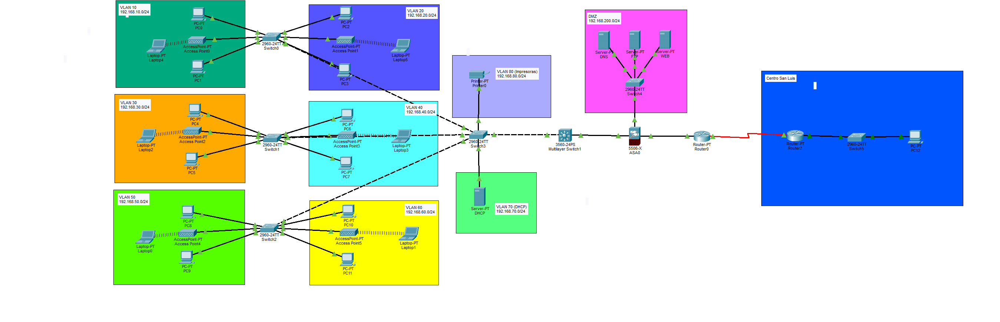

01
Infraestructura de red
Diseño en Packet Tracer, despliegue de red LAN y conexión con la red del Centro San Luis.
Ver detalle
 Empezar
Empezar
Espacios equipados, infraestructura de red profesional, servidores dedicados y soporte técnico para impulsar el crecimiento de las empresas instaladas en el Centro San Luis.
Diseño en Packet Tracer, despliegue de red LAN y conexión con la red del Centro San Luis.
Ver detalleInstalación del hardware del vivero y configuración estructurada del almacenamiento.
Ver detalleDespliegue y administración de los servicios esenciales en los servidores del vivero.
Ver detalleRegistro técnico y resolución documentada de incidencias durante la puesta en marcha.
Ver detallePublicación y puesta en producción de aplicaciones empresariales en la nube de AWS.
Ver detalleDiseño lógico y físico de la red corporativa del Vivero de Empresas simulado en Cisco Packet Tracer, preparado para dar servicio a 6 empresas independientes con aislamiento total mediante VLANs, servicios internos centralizados, perímetro seguro en DMZ e interconexión WAN con la red del Centro San Luis.
3 switches Cisco 2960-24TT con 6 puntos de acceso inalámbricos que aíslan a cada empresa (VLANs 10 a 60), concentrados en Switch3 junto al servidor DHCP (VLAN 70) y la impresora compartida (VLAN 80).
Switch multicapa Cisco 3560-24PS (SwitchL3) encargado del enrutamiento inter-VLAN mediante interfaces SVI (.254) y agente DHCP Relay hacia el servidor central (192.168.70.1).
Cisco ASA 5506-X con tres zonas de seguridad (Inside, DMZ y Outside), NAT/PAT dinámico, ACLs e inspección de protocolos para proteger los servidores públicos DNS, FTP y WEB.
Enlace WAN serial punto a punto (DCE/DTE) entre Router0 (Vivero) y Router2 (Centro) para conectar la red remota del Centro San Luis (192.168.100.0/24) con los servicios del vivero.
| VLAN / Segmento | Red / Máscara | Puerta de enlace / Extremos | Uso principal |
|---|---|---|---|
| VLAN 10 – 60 | 192.168.10.0/24 – 192.168.60.0/24 | 192.168.X.254 (SwitchL3) | Redes aisladas de Empresa 1 a Empresa 6 (cable y Wi-Fi) |
| VLAN 70 (DHCP) | 192.168.70.0/24 | 192.168.70.254 (SwitchL3) | Servidor DHCP centralizado (192.168.70.1) |
| VLAN 80 (Impresoras) | 192.168.80.0/24 | 192.168.80.254 (SwitchL3) | Impresora de red compartida (192.168.80.10) |
| DMZ | 192.168.200.0/24 | 192.168.200.254 (ASA0) | Servidores DNS (.2), FTP (.3) y WEB (.4) de viverosanluis.com |
| Tránsito y WAN | 10.0.0.0/30 · 172.16.0.0/30 · 172.16.1.0/30 | SwitchL3 ↔ ASA0 ↔ Router0 ↔ Router2 | Tránsito interno L3 y enlace serial WAN (clock rate 64000) |
| LAN Centro San Luis | 192.168.100.0/24 | 192.168.100.1 (Router2) | Red remota del centro y estación cliente PC12 (.10) |

Despliegue completo del servidor del vivero sobre Ubuntu Server 26.04 LTS, combinando una configuración de hardware redundante y segura con una matriz de almacenamiento RAID 10 aislada para las 6 empresas alojadas.
Servidor equipado con procesador Intel Xeon E-2336 / Core i9, 32 GB RAM DDR4 ECC, doble interfaz Gigabit Ethernet y SAI Online de 1500 VA. En UEFI se fija el arranque exclusivo en disco RAID (deshabilitando USB y PXE), contraseña de administrador, Secure Boot y reloj en UTC.
Instalación limpia de Ubuntu Server con particionado LVM, subinterfaces
VLAN (10–60 y 80) en Netplan con ip_forward=1, restricción de su
mediante pam_wheel, cortafuegos UFW (denegación por defecto) y
bóveda cifrada en KeePassXC (KDBX 4, AES-256 y Argon2d).
Separación entre 1 SSD de sistema (/dev/sda) y 4 HDD dedicados
(/dev/sdb–/dev/sde) sobre controladora PCIe con batería
BBU en modo JBOD/Pass-Through. Creación del volumen lógico
/dev/md0 en RAID 10 con mdadm, formateado en
ext4 y montado por UUID en /srv/vivero_empresas.
Creación automatizada de 6 grupos (empresa1 a empresa6) y sus
carpetas con propietario root:empresaX, permisos 2770
(rwxrws---) con herencia de grupo SGID y listas
ACL por defecto (g::rwx,o::---), bloqueando cualquier acceso
cruzado.
| Bloque | Tecnología / Parámetro | Detalle aplicado en el vivero |
|---|---|---|
| Almacenamiento SO y Datos | RAID 1 (SO) / RAID 10 (/dev/md0) |
2× NVMe M.2 1 TB para SO y 4× HDD SATA en espejo + striping con caché protegida por BBU. |
| Punto de montaje | /srv/vivero_empresas (ext4) |
Etiqueta VIVERO_RAID10, persistencia en
/etc/mdadm/mdadm.conf y montaje por UUID en /etc/fstab.
|
| Permisos corporativos | 2770 (SGID) + ACL por defecto |
Herencia automática de grupo empresaX y denegación total para el resto
de empresas. |
| Seguridad del servidor | UFW, PAM y KeePassXC | Puertos abiertos: SSH (22/TCP), DHCP (67/UDP) y FTP (20-21 y 40000-40100/TCP); grupo
wheel para su. |
Despliegue, securización y verificación de los servicios de red esenciales sobre el servidor
Ubuntu Server (vivero-san-luis) para automatizar el direccionamiento
de las empresas, habilitar el intercambio de ficheros y permitir la administración remota segura.
Configurado con kea-dhcp4-server y subinterfaces VLAN en Netplan
(enp0s8.10 a enp0s8.60 y enp0s8.80). Reparte rangos
.50 – .100, puerta de enlace .254 y DNS 192.168.200.2
por cada subred.
Servidor FTP seguro con acceso anónimo de solo lectura en /srv/ftp/publico y
usuarios locales enjaulados (chroot) con permisos colaborativos de grupo
(local_umask=002) y modo pasivo habilitado.
Administración por terminal cifrada en el puerto 22 con acceso exclusivo
mediante clave pública ed25519, deshabilitando el login de root y
la autenticación por contraseña.
Acceso gráfico ligero compatible con el cliente nativo de Escritorio Remoto de Windows por
el puerto 3389, asegurado con capa de cifrado TLS sobre el entorno
XFCE4.
Registro documentado de las incidencias detectadas durante la puesta en marcha física y lógica del almacenamiento y los servidores del vivero, junto con la solución aplicada para dejar el sistema operativo.
| ID | Fase / Equipo | Incidencia detectada | Solución aplicada |
|---|---|---|---|
| INC-01 | Instalación física / Controladora | La controladora PCIe en modo RAID Hardware ocultaba los 4 discos HDD individuales al sistema operativo. | Reconfiguración en la utilidad de la controladora a modo JBOD / Pass-Through manteniendo activa la batería BBU. |
| INC-02 | Creación RAID 10 (mdadm) |
Presencia de metadatos antiguos en /dev/sdc y cambio de nombre del array tras reiniciar el servidor. |
Limpieza previa con wipefs -a, registro del array en /etc/mdadm/mdadm.conf, actualización de initramfs y montaje por UUID en /etc/fstab. |
| INC-03 | Permisos y aislamiento (P4) | La máscara por defecto umask 0022 limitaba los permisos de escritura grupal sobre archivos nuevos dentro de cada empresa. |
Aplicación de ACL por defecto (setfacl -R -d -m g::rwx,o::---) combinada con el bit SGID (2770). |
Documentación del proceso de aprovisionamiento en la nube de Amazon Web Services (AWS), configuración de instancias, grupos de seguridad y publicación de las aplicaciones del vivero para su acceso exterior.
[Espacio reservado para esquema de arquitectura y capturas de despliegue en AWS]